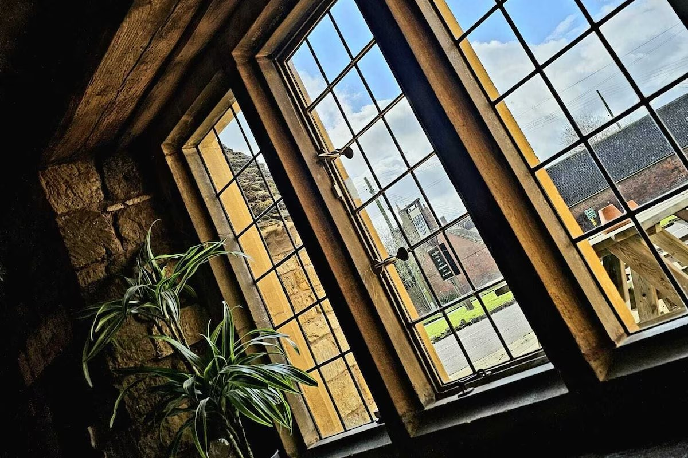
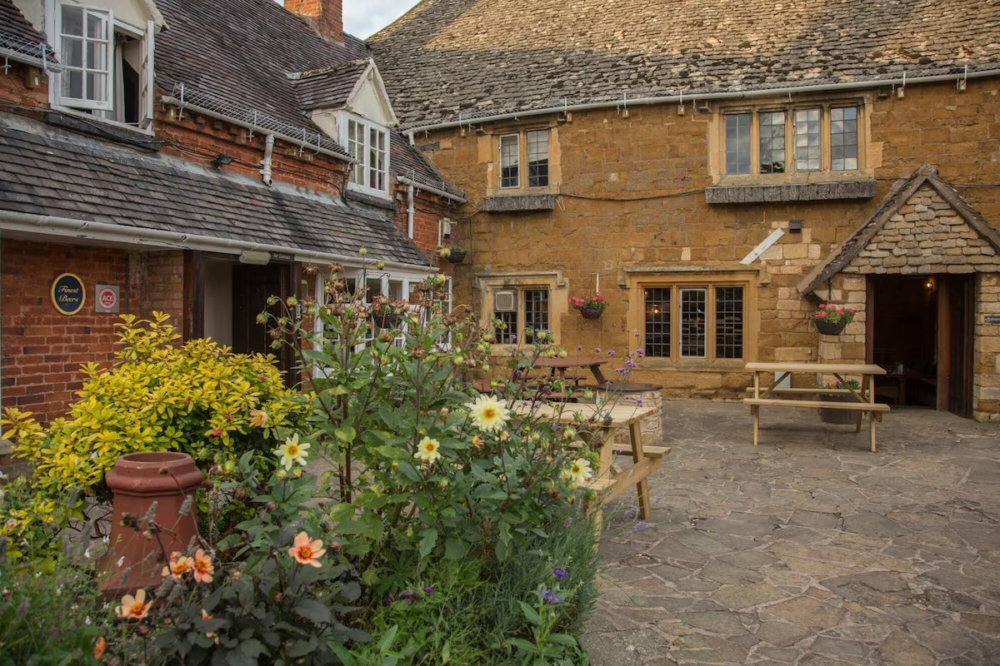

A proper village pub since 1897
Come on in.
Stay a while.
Good company, a warm welcome and a pub full of stories. Right on the green in lovely Lower Quinton.
Hello, and welcome
Some places just feel like home.
A pint with an old friend. A long lunch that turns into an afternoon. A new face who soon feels like a regular.
That’s the kind of place we love. Tucked into the heart of Lower Quinton, The College Arms brings together history, hospitality and the simple pleasure of having somewhere good to go.
Get to know our pub

The good stuff
There's always a
reason to pop in.
Whether you’re here for a meal, something to drink or just a bit of company, pull up a chair.

Not just somewhere to go.
Somewhere to belong.
A little local legend
Old walls.
Great stories.
Our Grade II listed home has roots stretching back to the early 1500s. Once a farmhouse, it later became a village pub, taking its name from Magdalen College, Oxford.
There’s even something rather special about the sign outside. The College Arms has a rare connection to the college’s own coat of arms.
Discover the storySee you soon
Meet you
at the pub?
The Village Green, Lower Quinton, CV37 8SG